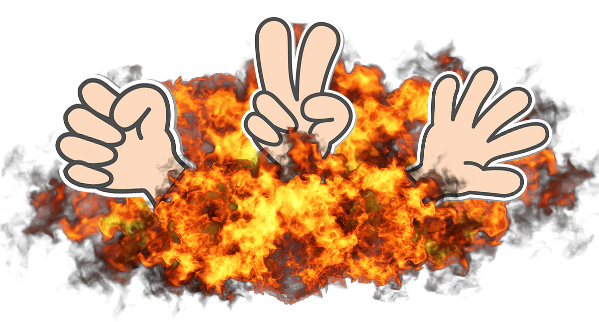

How to Play Rock, Paper, Scissors
Rock, Paper, Scissors is a hand game usually played between two people. (But in this case a player vs. a robot.)
The player will select one of three shapes formed by a hand:- Rock (a fist)
- Paper (an open hand)
- Scissors (a fist with the index and middle fingers extended, forming a V)
The possible outcomes are:
- Rock crushes Scissors (Rock wins)
- Scissors cuts Paper (Scissors wins)
- Paper covers Rock (Paper wins)
- If both players choose the same shape, the game is a tie, and it is usually played again.
Game mechanics:
- The player click a "hand" to select the move.
- The player will be notified about what "hand" they played, and what the robot played.
- The game compare the shapes to determine the winner based on the outcomes listed above.
- The winner of each round earns a point, and the game continues until the player or robot reaches ten points.
- The player with the most points at the end of the game is declared the overall winner.
To reset the game: Click "Reset points"
Good Luck!
Codes?
- Enter a code if you know it to active different game modes.
- Reset the game code by clicking the "Reset Code" button,